source(here::here("R/app_type_metrics.R"))
app_type_metrics()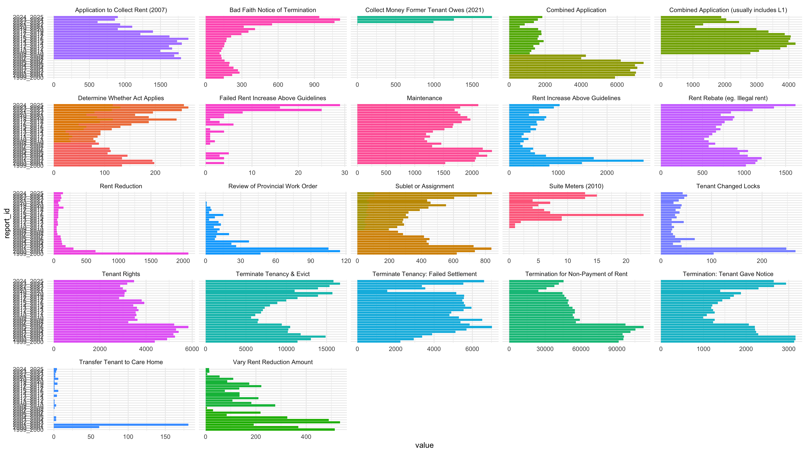
These are visualizations of the datasets in the cleaned_data_folder.
source(here::here("R/app_type_metrics.R"))
app_type_metrics()
source(here::here("R/combo_application_summary.R"))
combo_application_summary()Rows: 136
Columns: 5
$ combo_family <chr> "Landlord", "Landlord", "Landlord", "Landlord", "Land…
$ app_combo <chr> "L1/L2", "L2/L9", "L1/L2/L8", "L1/L3", "L3/L9", "L1/L…
$ count <dbl> 400, 320, 219, 214, 204, 195, 168, 158, 152, 123, 108…
$ periods_present <dbl> 34, 32, 18, 18, 19, 16, 18, 19, 20, 13, 14, 11, 7, 12…
$ count_per_period <dbl> 11.764706, 10.000000, 12.166667, 11.888889, 10.736842…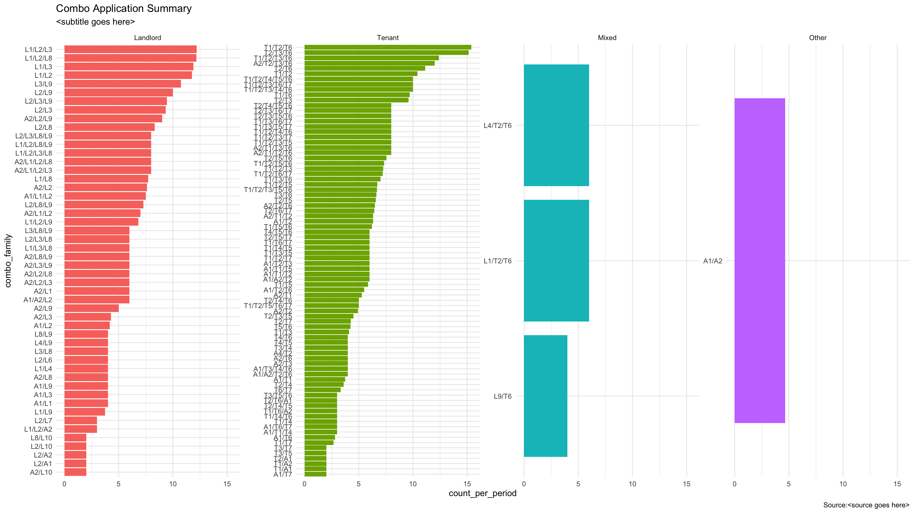
source(here::here("R/financial_metrics.R"))
financial_metrics()Rows: 16
Columns: 5
$ report_id <chr> "1998_1999", "2004_2005", "2015_2016", "2006_2007", "2006_20…
$ metric_id <chr> "cost_filing", "cost_filing", "cost_filing_tenant", "budget_…
$ value <dbl> 60, 150, 50, 25700000, 17700000, 8000000, 10000000, 24900000…
$ currency <chr> "dollars", "dollars", "dollars", "dollars", "dollars", "doll…
$ notes <lgl> NA, NA, NA, NA, NA, NA, NA, NA, NA, NA, NA, NA, NA, NA, NA, …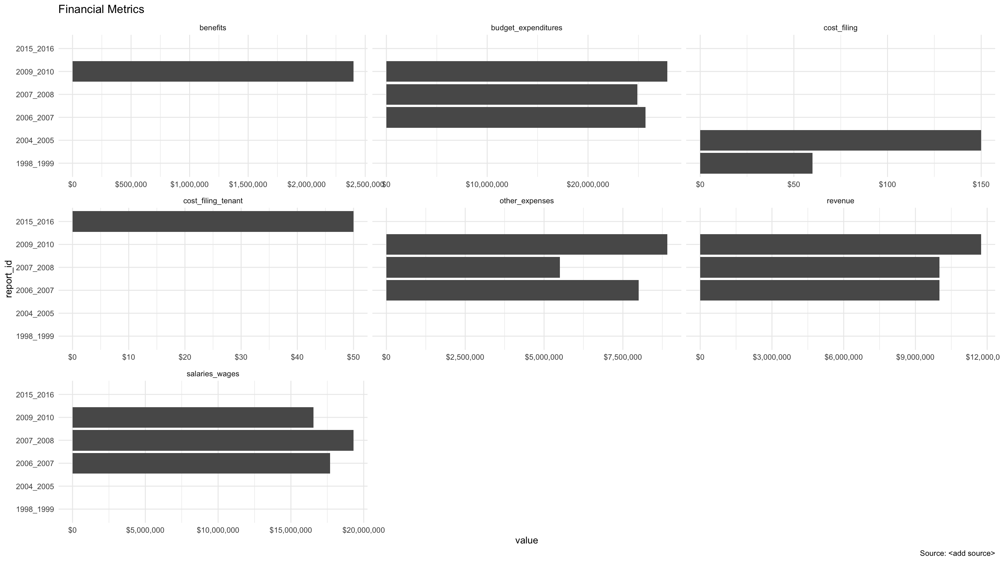
source(here::here("R/l_single_type_avg_days_chart.R"))
l_single_type_avg_days_chart()Rows: 328
Columns: 10
$ report_id <chr> "2015_2016_FY", "2015_2016_FY", "2015_2016_FY", "…
$ period_label <chr> "2015-16 FY", "2015-16 FY", "2015-16 FY", "2015-1…
$ period_order <dbl> 2015.75, 2015.75, 2015.75, 2015.75, 2015.75, 2015…
$ report_status <chr> "reported", "reported", "reported", "reported", "…
$ app_combo <chr> "L10", "L2", "L3", "L4", "L5", "L6", "L7", "L8", …
$ app_type <chr> "L10", "L2", "L3", "L4", "L5", "L6", "L7", "L8", …
$ avg_days <dbl> NA, 22.73815, 25.24717, 30.64069, 294.14946, 26.6…
$ performance_standard <dbl> NA, 30, 30, 30, 30, 30, 30, 30, NA, 30, 30, 30, 3…
$ percent_in_standard <dbl> NA, 0.03442341, 0.00000000, 0.09803922, 0.0000000…
$ data_status <chr> "not_reported", "reported", "reported", "reported…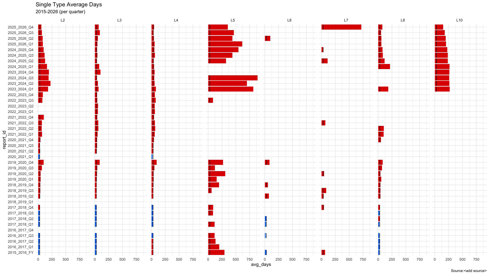
source(here::here("R/L1_L9_avg_days_chart.R"))
L1_L9_avg_days_chart()Rows: 77
Columns: 8
$ report_id <chr> "2015_2016_FY", "2015_2016_FY", "2016_2017_Q1", "…
$ period_label <chr> "2015-16 FY", "2015-16 FY", "2016-17 Q1", "2016-1…
$ period_order <dbl> 2015.50, 2015.50, 2016.00, 2016.00, 2016.25, 2016…
$ app_combo <chr> "L1", "L9", "L1", "L9", "L1", "L9", "L1", "L9", "…
$ app_type <chr> "L1", "L9", "L1", "L9", "L1", "L9", "L1", "L9", "…
$ avg_days <dbl> 22.80866, 23.45000, 23.85980, 24.48214, 26.16281,…
$ performance_standard <dbl> 25, 25, 25, 25, 25, 25, 25, 25, 25, 25, 25, 25, 2…
$ percent_in_standard <dbl> 0.10505284, 0.05434783, 0.09240591, 0.22321429, 0…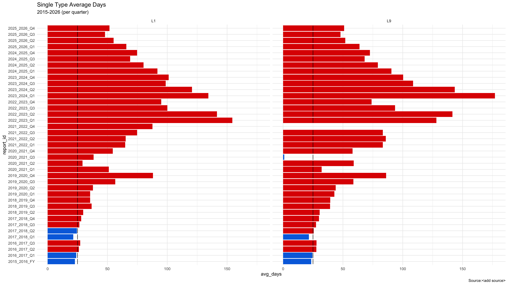
source(here::here("R/landlord_vs_tenant_receipts.R"))
landlord_vs_tenant_receipts()Rows: 27
Columns: 5
$ report_id <chr> "1998_1999", "1999_2000", "2000_2001", "2001_2002", …
$ landlord_received <dbl> 0.920, 0.910, 0.910, 0.910, 0.910, 0.905, 0.920, 0.9…
$ tenant_received <dbl> 0.080, 0.090, 0.090, 0.090, 0.090, 0.095, 0.080, 0.0…
$ value_type <chr> "percent", "percent", "percent", "percent", "percent…
$ status <chr> "reported", "reported", "reported", "reported", "rep…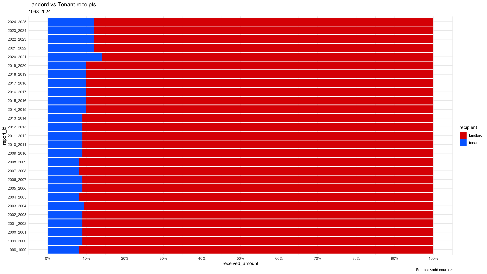
source(here::here("R/member_counts_by_file.R"))
member_counts_by_file()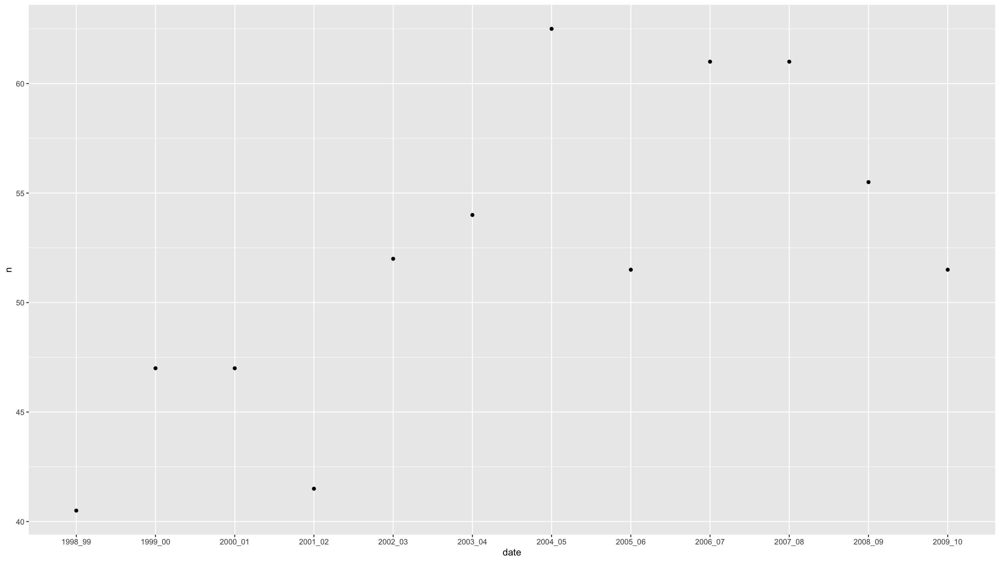
operational_metrics.R
source(here::here("R/operational_metrics.R"))
operational_metrics()Rows: 81
Columns: 5
$ report_id <chr> "1998_1999", "1998_1999", "1998_1999", "1999_2000", "1999_20…
$ metric_id <chr> "total_received", "total_resolved", "total_unresolved", "tot…
$ value <dbl> 59894, NA, NA, 70181, 70862, 5000, 73931, 76946, 3536, 77104…
$ unit <chr> "applications", "applications", "applications", "application…
$ notes <chr> "Forecast 65000 applications", "Forecast 65000 applications"…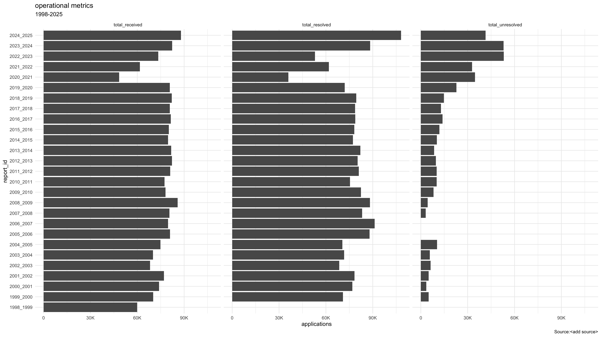
regional_metrics.R
source(here::here("R/regional_metrics.R"))
regional_metrics()Rows: 384
Columns: 6
$ report_id <chr> "1998_1999", "1998_1999", "1998_1999", "1998_1999", "1998_19…
$ region_id <chr> "region_central", "region_eastern", "region_northern", "regi…
$ metric_id <chr> "total_received", "total_received", "total_received", "total…
$ value <dbl> 9282, 10490, 2314, 9289, 11547, 8732, 11352, 15396, 7508, 99…
$ unit <chr> "applications", "applications", "applications", "application…
$ notes <lgl> NA, NA, NA, NA, NA, NA, NA, NA, NA, NA, NA, NA, NA, NA, NA, …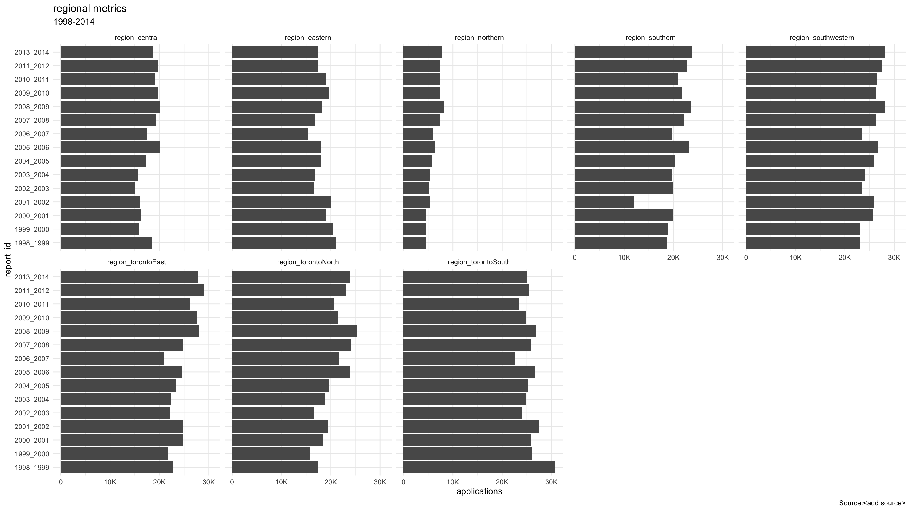
source(here::here("R/resolution_metrics.R"))
resolution_metrics()Rows: 35
Columns: 5
$ report_id <chr> "2013_2014", "2013_2014", "2013_2014", "2013_2014", "2013_20…
$ metric_id <chr> "resolved_abandoned", "resolved_mediation", "resolved_hearin…
$ value <dbl> 2609, 13054, 51845, 4851, 596, 7223, 1948, 12668, 11926, 481…
$ unit <chr> "applications", "applications", "applications", "application…
$ notes <lgl> NA, NA, NA, NA, NA, NA, NA, NA, NA, NA, NA, NA, NA, NA, NA, …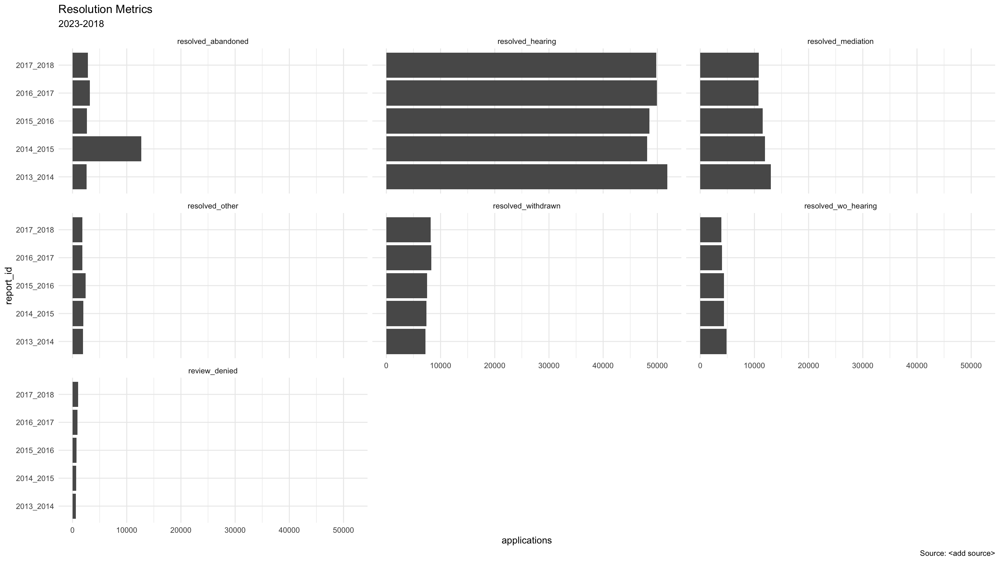
source(here::here("R/staffing_metrics.R"))
staffing_metrics()Rows: 58
Columns: 5
$ report_id <chr> "1998_1999", "1998_1999", "1998_1999", "1999_2000", "1999_20…
$ metric_id <chr> "staff", "canonical_names_found", "part_time_names_found", "…
$ value <dbl> 282, 41, 1, 50, 6, 52, 10, 46, 9, 52, 0, 54, 0, 66, 7, 57, 1…
$ unit <chr> "people", "people", "people", "people", "people", "people", …
$ notes <chr> "“Staff and members” pg. 8", "Counted via scripts; check Met…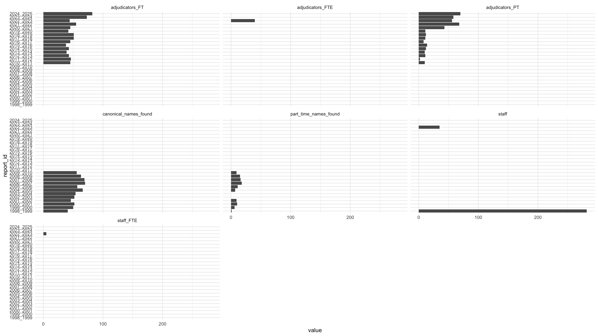
source(here::here("R/t_single_type_avg_days_chart.R"))
t_single_type_avg_days_chart()Rows: 287
Columns: 10
$ report_id <chr> "2015_2016_FY", "2015_2016_FY", "2015_2016_FY", "…
$ period_label <chr> "2015-16 FY", "2015-16 FY", "2015-16 FY", "2015-1…
$ period_order <dbl> 2015.75, 2015.75, 2015.75, 2015.75, 2015.75, 2015…
$ report_status <chr> "reported", "reported", "reported", "reported", "…
$ app_combo <chr> "T1", "T2", "T3", "T4", "T5", "T6", "T7", "T1", "…
$ app_type <chr> "T1", "T2", "T3", "T4", "T5", "T6", "T7", "T1", "…
$ avg_days <dbl> 25.31298, 25.46230, 23.14062, NA, 30.59064, 26.46…
$ performance_standard <dbl> 30, 30, 30, NA, 30, 30, 30, 30, 30, 30, NA, 30, 3…
$ percent_in_standard <dbl> 0.00000000, 0.07993605, 0.00000000, NA, 0.0000000…
$ data_status <chr> "reported", "reported", "reported", "not_reported…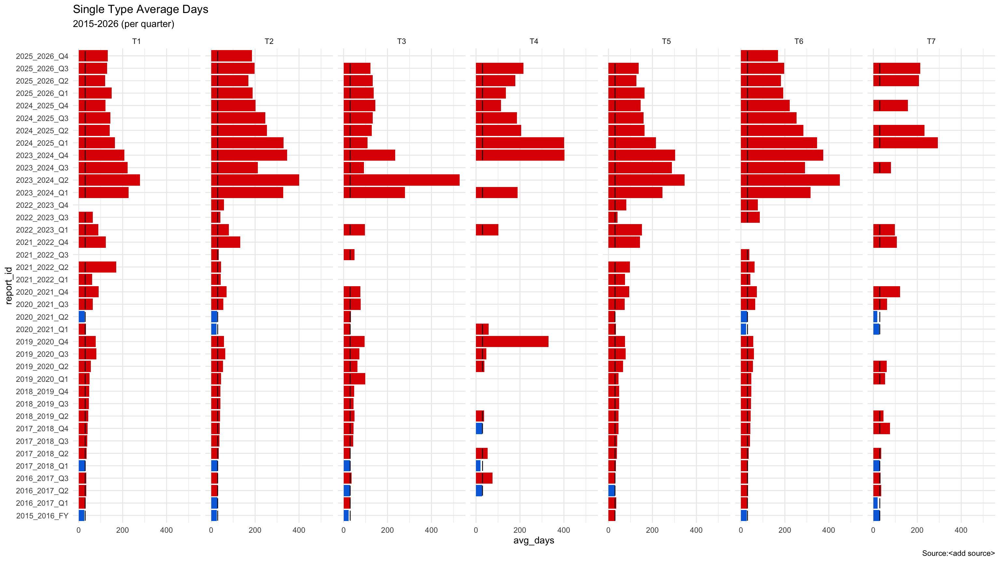